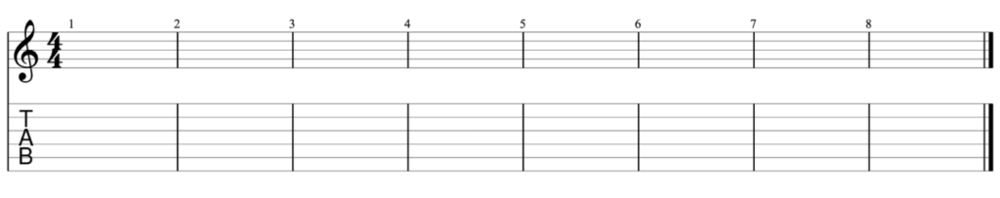
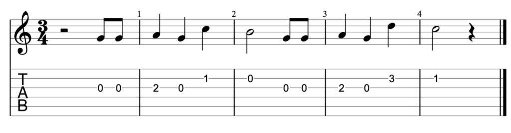

Learning how to read guitar TABs is an important tool that makes it easier for beginning guitar players to learn how to play. Thankfully, guitar TABs are also the easiest method of notating music for guitar. Since most guitars are six-string guitars, we’ll look at tabs applicable to six-strings. For guitars with seven strings or more, it’s similar, but the tabs have additional lines.
Before we look at tabs, we first need to properly identify the number and tuning of each string on the guitar. The first string is the thinnest string on the guitar, and the sixth string is the thickest string. Starting from the sixth string, the strings are tuned E-A-D-G-B-e. A mnemonic device I use to remember the standard tuning is “Every Animal Does Good Behavior Exercises.”
e |----------------------------------------------|
B |----------------------------------------------|
G |----------------------------------------------|
D |----------------------------------------------|
A |----------------------------------------------|
E |----------------------------------------------|
This is what a simple blank tab looks like. There are variations here and there on different websites, but the variations are mostly just aesthetic. Notice how there are six lines that run across? Each line represents a string on your guitar, and on the left, you’ll see the notes that these strings are tuned to. Take note that the first string on the guitar (thinnest string) is represented on the first line of the TAB, and the sixth string (thickest string) is the last line of the TAB. This is something many beginners get confused with.
There are also professional TABs that come with accompanying standard notation. The great thing about having standard notation displayed above your TABs is standard notation will give you rhythm notations as well. Most simple TABs do not have rhythm notations which means that you’ll have to be very familiar with the rhythm of the notes before reading the TABs. For our purposes, we’ll be using professional TABs.
Here is what a blank professional TAB looks like. Notice that there is a staff with a treble clef above for standard notation and the TABs are below. Also notice that the tuning of the strings are not displayed beside the TAB. This usually means that the song will be using the standard EADGBe tuning. If the song uses alternate tunings like Drop D, the new tuning will be notated either beside the strings or at the beginning of the music sheet.
Drop D tuning in simple TABs
e |----------------------------------------------|
B |----------------------------------------------|
G |----------------------------------------------|
D |----------------------------------------------|
A
|----------------------------------------------|
D |----------------------------------------------|
Obviously, a tab sheet for a song is going to have more than just blank lines, so let me start by explaining the numbers first, then we’ll get into the other symbols.
The numbers represent which fret of that particular string needs to be played. 0 means open string, 1 means first fret, 2 means second fret, and so on. Also, tabs are read from left to right. So in the example above, you’ll start by playing the open G string (3rd string) twice, then the note on the second fret, then the open string again. Then we’ll move on to the first fret of the B string (second string), then the open B string. Try playing the entire example above, and see whether you recognize the song!